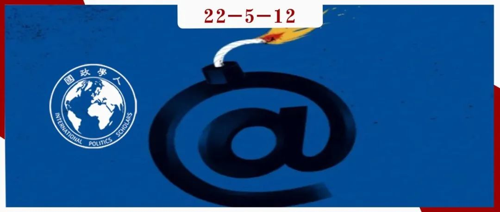

收录于合集

美国网络安全战略的失败与修正
作者： Sue Gordon，哈佛大学肯尼迪学院贝尔弗科学与国际事务中心高级研究员，2017-2019年担任美国国家情报局首席副局长；Eric Rosenbach，哈佛大学肯尼迪学院贝尔弗科学与国际事务中心联合主任，2014-2015年担任美国国防部负责国土防御与全球安全的助理部长，2015-2017年担任五角大楼参谋长。
编译： 李燕（国政学人编译员，辽宁大学国际经济政治学院）
来源： America’s Cyber-Reckoning：How to Fix a Failing Strategy, Foreign Affairs , Vol.101, No. 1 (January/February,2022), pp.10-20. From Foreign Affairs website:
https://www.foreignaffairs.com/articles/united-states/2021-12-14/americas- cyber-reckoning

导读
十年前，人们普遍认为世界正处于网络冲突新时代的风口浪尖，基于计算机的灾难性攻击将对人们生活的世界造成严重破坏。新闻媒体发布“末日”情景的警告；华盛顿的官员担心“网络珍珠港”会造成人员伤亡并摧毁关键基础设施。然而，最可怕的预言并没有成真。美国并没有受到具有实际影响的毁灭性网络攻击。即使美国的对手想要进行此类攻击，传统的威慑形式似乎也会阻止他们采取行动。
这些错误警告的背后隐含着一个假设，即网络和平的另一面必须是网络战争。 但在随后的几年里，人们已经清楚认识到，网络空间领域，如同其他冲突领域一样，不是由战争与和平之间的二元对立构成，而是由这两个极点之间的光谱所构成——大多数网络攻击都落在这一模糊的空间里。这一结果表明，对死亡和破坏的最严重恐惧尚未成真。然而，另一方面，网络冲突的复杂性使得美国更难制定有效的网络战略。即使没有人丧生，基础设施大部分都幸免于难，网络攻击也很难说是无害的。如今，美国的对手已经磨练出了出色的网络技能，以对美国的国家安全、经济以及民主造成损害。然而，美国政府对这一问题依旧停留在最初的过时的认知里，对于回击表现得十分保守。这不仅表现在美国不愿在网络领域持续对抗其对手，还遭受了严重的自我伤害，使其无法在网络空间促进其国家利益。
编译
01
战火初起
据记录，第一次网络攻击发生在1988年。一位计算机科学专业的研究生罗伯特·莫里斯发明了一个叫做“莫里斯蠕虫”（the Morris worm）的小软件。该软件使得彼时仍处于萌芽状态的互联网陷入瘫痪。在随后的二十年里，网络安全一直是黑客和情报人员主要关注的领域。然而，2010年的“震网”（Stuxnet）行动改变了局面。这是一次美国针对伊朗用于浓缩铀的离心机的毁灭性有效网络攻击。美国领导人很快开始对本国网络安全的脆弱性发出警报。早在2009年，时任总统奥巴马就警告网络攻击可能会使“整个城市陷入黑暗”。三年后，国家安全局局长基思·亚历山大在向参议院军事委员会通报情况时表示，网络攻击摧毁关键基础设施只是时间问题。大约在同一时间，西弗吉尼亚州民主党参议员声称，“大规模伤亡的前景”使网络攻击“与恐怖主义一样危险”。
这些警告似乎很有先见之明。2012年，伊朗特工用恶意软件攻击了沙特石油公司，清除了3万台计算机上的数据。两周后，伊朗又针对卡塔尔的天然气公司进行了类似的打击。迄今为止，这些网络攻击是历史上最具破坏性的，也是第一次有政府在网络空间针对美国合作伙伴所采取的进攻性行动。这些攻击引发了全球能源市场震动。两个月后，美国国防部长莱昂·帕内塔发表演讲警告道，其他国家或恐怖分子或许会使用网络武器使载有致命化学品的旅客列车或货运列车脱轨、污染主要城市的供水、中断电网或禁用通信网络和军事硬件。美国人需要为“网络珍珠港”做好准备：这种攻击会造成物理破坏和生命损失，并使整个国家处于瘫痪，产生一种新的、深刻的脆弱感。帕内塔还试图概述了美国在网络空间的威慑战略，认为“仅改进防御”是不够的。当美国国家安全部门发现即将发生并会带来重大后果的网络攻击时，他们将需要“采取行动的选择权”。因此，他解释说，军方已具备“进行有效进攻性网络行动的能力，以应对美国在网络空间利益受到的威胁”。
2012年至2014年，国家安全委员会工作人员召开了数十次高层会议，起草了一整套复杂的政策——“20号总统政策指令”——为美国何时可以发起进攻性网络行动以阻止未来攻击制定了指导方针。五角大楼联合参谋部连续数月努力制定严格的协议，以便国防部长能够批准“紧急网络行动”，用以抵消和对抗针对美国本土的敌对的针对性网络攻击。
2014年，朝鲜特工对美国领土进行了首次破坏性网络攻击。从结果来看，索尼影业的服务器泄露了大量机密信息。黑客将其上传到整个互联网上，并威胁要在网络空间进行进一步的“恐怖袭击”。随后数周，美国情报界一直担心朝鲜特工在美国关键基础设施内预先部署了网络弹药，并将很快将其“引爆”。然而，这并没有发生。奥巴马政府对那次袭击的反应在许多方面是有效的。奥巴马直接指责了朝鲜进行黑客攻击，并立即对其实施了经济制裁。这也是有史以来第一次针对网络攻击实施的制裁。公开披露（public attribution）和制裁相结合可能阻止了朝鲜发动更多的攻击。然而，即使经过了两年的规划和发展，美军也还是没有具备帕内塔之前承诺的网络响应能力。
02
未吸取的教训
奥巴马政府对网络空间持有一种老派的认知方式，在某些方面陷入了一种老旧的冷战范式，认为网络行动可能会迅速升级为一场全面战争 。 这种认知随着五角大楼建立网络域部队的军事结构得以延续。2009年，国防部长罗伯特·盖茨建立了美国网络司令部，隶属于美国战略司令部的四星指挥官。后者以行动迟缓而闻名，负责监督该国的核武器。 这种部署结构表明，美国政府更倾向于将网络领域的冲突视为类似于核冲突或外层空间的军事活动，而不是反恐行动和特种作战的动态行动领域。 盖茨还确定道，新司令部不会开展所谓的影响外国参与者想法或信念的信息行动。
网络司令部这样的结构和任务安排在随后的几年中带来了严重后果，尤其是在美国打击伊斯兰国（ISIS）的行动中。五角大楼是在原有针对敌对国家的战争计划基础上构建了网络司令部并规划了其能力。因此，该部门很少有专门用于反恐的资源。在与伊斯兰国冲突的头两年，由于高层领导不力、缺乏作战能力以及不愿冒险获取情报来源和方法，网络司令部始终未能破坏伊斯兰国的行动。
在关于该部门的架构和任务安排的错误决定背后，隐藏着更深层次的失败，即美国政府未能从2014年朝鲜黑客攻击索尼事件中吸取教训： 网络攻击需要立即响应、公开披露和外交对抗。 在那次攻击之后，美国的网络对手进行了越来越大胆和阴险的网络攻击浪潮。例如，2014年，一群与俄罗斯政府有关联的特工试图通过黑客攻击、虚假信息和拒绝服务攻击的有效组合来破坏乌克兰总统选举。2015年，俄罗斯政府支持的特工再次袭击了乌克兰的电网，该举导致乌克兰部分地区在冬季天气中连续数日断电。然而，奥巴马政府袖手旁观，没有进行回应。这可能给了俄罗斯通过网络和信息行动来干预2016年美国总统大选的底气，而不必担心遭到报复。事实证明俄方判断也是对的：在这次攻击事件演变为一场危机并登上《纽约时报》头条前，即2016年夏秋两季内，奥巴马政府几乎没有采取任何行动来抵制俄罗斯的干预。
2017年就任美国总统的唐纳德·特朗普，比奥巴马更加武断、好斗。 特朗普领导下的美国政府对竞争对手的态度前后矛盾且难以预测。 但2018年白宫作出批准，将网络司令部提升为全面作战司令部地位，这使该组织摆脱了美国战略司令部的限制。同年晚些时候，国家安全顾问约翰·博尔顿宣布，政府将在进攻性网络行动中采取更激进的方式，允许军方在得到国防部长批准的情况下开展低于“武装攻击”法律门槛的行动。这项被称为“国家安全总统备忘录13”（National Security Presidential Memorandum 13）的政策为一些网络行动奠定了基础，例如针对俄罗斯“巨魔农场”（troll farm）[1]互联网研究机构进行的拒绝服务攻击和信息行动，此举还可能阻止了该组织干预2018年国会中期选举。这些行动证明了低强度、主动的网络战术的有效性，并让人们明白， 当涉及网络空间时，不需要在大战略层面进行威慑：低技术、低风险、有针对性的行动可以就可以做到这一点。
然而，由于总统本人的行为，特朗普政府对俄罗斯网络活动的态度绝称不上是完全的胜利。特朗普本人对普京异常的屈从破坏了美国针对俄罗斯的连贯战略。特朗普不愿为美国利益挺身而出对抗俄罗斯，这一行为对美国民主构成了真正的威胁。他公开邀请俄罗斯攻击其2016年选举的对手希拉里·克林顿，支持普京提出的建立美俄联合成立“坚不可摧的网络安全单位”的荒谬提议，一再破坏美国执法机构、情报部门和军队保护美国国家安全的努力。
03
咎由自取
特朗普并不是近年来唯一一个损害美国网络安全的美国人物。2013年，美国国家安全局合同工爱德华·斯诺登造成了美国历史上最重大的泄密事件之一，他向记者提供了数千份高度机密的文件，据一些报道，他甚至还提供给了中国和俄罗斯的情报部门，这些文件揭示了美国国家安全局在全球业务的广泛触角，包括窃听美国盟国的高级政府官员。这些披露对美国保护网络空间的努力造成的负面影响极其深重。当涉及网络空间问题时，华盛顿基本上失去了在世界舞台上的所有信誉。
斯诺登泄密事件发生后，不管是美国的欧洲盟友还是中国，许多国家的政府都将美国列为世界上最大的网络安全威胁。 泄密事件也对美国政府与私营部门之间的合作造成了毁灭性打击，这原是美国捍卫在网络空间利益的重要方面。此前一些美国科技公司出于担心负面宣传和在中国失去业务的风险，曾与联邦政府合作开展非机密网络安全计划，而事件发生后，科技公司们决定完全停止此类合作。
几年后，美国国家安全局又失去了对其一些最敏感的黑客工具的控制，情况变得更糟了。在两起独立的事件中，国家安全局的员工从绝密的国家安全局网络中移除了极其强大的技术工具，令人难以置信的是，他们甚至将其带回了家中。最终一个与俄罗斯情报部门有联系的神秘黑客组织“暗影经纪人”（shadow brokers）得到了一些国家安全局的工具并将它们发布到了互联网上。其中，一个被称为“永恒之蓝”（Eternal Blue）的工具落入犯罪分子之手，并被用来进行勒索软件攻击，黑客们的要求得不到满足就将计算机系统置于瘫痪。在其后的几年这一问题困扰了全世界，历史上最具破坏性的两次网络攻击都使用了基于“永恒之蓝”的工具。在过去的几年里，勒索软件攻击已经袭击了医院、学校、市政府和管道，这充分证实了网络威胁的严重性。
04
如何做得更好
十年来华盛顿一直受制于过时的网络冲突概念、奥巴马时期的过度被动、特朗普时期的前后矛盾以及泄密和疏忽造成的损害，拜登上任时实际上继承了一个烂摊子。让美国网络政策重回正轨将需要拜登政府大幅改变华盛顿网络安全的构想和实施方式。而这一进程因当前加密货币价值和影响的迅速上升、虚假信息的泛滥以及勒索软件攻击的急剧增加等因素而变得尤其具有挑战性。
在这种环境下，拜登政府能做的最重要的事情就是接受这样一种观念，即能够进行破坏性网络攻击的国家不太可能会被美国自身的网络能力所吓倒，但仍能被美国常规军事和经济实力所威慑。 在网络空间问题上，华盛顿不应该试图以毒攻毒——最起码不应该单打独斗，美国可采取许多更有效的方法来控制事态的发展。
应采取的第一个实际步骤是优先考虑保护数据。 拜登政府应当与国会合作，加倍努力通过一项类似于欧盟《通用数据保护条例》的国家数据安全法，赋予公民对未能保护其数据的公司采取法律行动的权利。美国是世界上仅有的没有这样一部法律的主要民主国家之一。结果，许多异常复杂的州级隐私和数据安全法如雨后春笋般涌现，阻碍了基于信息的安全经济的发展。美国国会目前正在努力要求提供关键基础设施的公司向联邦当局通报其数据泄露情况，这是一个向好的发展，但还远远不够。
拜登政府也应该将网络攻击的快速公开披露作为其战略的核心组成部分。 过去的观点认为，很难准确地进行网络攻击溯源、归因、披露和谴责。但在过去五年中，先进的数字取证技术使得情报机构和私营网络安全公司能够合理确定大多数网络攻击的幕后黑手。这种演变非常重要，因为事实证明，披露本身就是一种有效的阻止美国竞争对手进行攻击的方法。
此外，还需要对相关组织进行调整。 首先，2018年在国土安全部内成立的网络安全和基础设施安全局（Cybersecurity and Infrastructure Security Agency）必须成为国内网络安全行动的真正重心；不应将此类行动的最终权力授予情报组织、执法机构或军队。在过去三年中，网络安全和基础设施安全局已经发展了打击选举干预和虚假信息活动的重要能力。现在，它必须对联邦政府网络的防御进行改善，加快与私营部门共享威胁指标的速度，并为面临勒索软件威胁的关键基础设施提供商提供专业知识和运营支持。为了达到这些，应当赋予网络安全和基础设施安全局更多资金：该组织当前拥有30亿美元的年度预算，未来四年内应予其增加两倍，最终与国家安全局持平。
就执法部门来看，其仍可以在国内防范勒索软件攻击的网络行动方面发挥重要作用。联邦调查局最近采取了一项有效且具有创意的行动，删除了他国情报机构在美国数百台服务器中植入的恶意工具。这是一次开创先例的新举措，该局获得了未经设备所有者同意的单方面识别和删除他国恶意软件的授权。而此行动的法定权力是通过对《联邦刑事诉讼规则》的更新确定的； 拜登政府应寻求对法律进行更多创新更新，以便联邦调查局能够采取更积极的措施。
美国军方也必须适应网络时代发展。 拜登政府应该将网络司令部塑造成更类似于灵活的联合特种作战司令部的存在。 网络司令部过于依赖国家安全局来创建独特且不可溯源的网络工具，而这些工具可能需要数年时间才能开发出来；为了提高其敏捷性，网络司令部应该转向不太复杂的“可燃”工具，即那些投弃式工具，因为它们已经可以公开获得，没有必要隐藏它们的来源。值得赞扬的是，特朗普政府通过增加低技术、公开披露的进攻性网络行动的频率提升了华盛顿的竞赛能力，增强了美国在网络领域的信誉。例如，2019年伊朗的伊斯兰革命卫队击落一架美国监视无人机后，网络司令部对该组织至关重要的数据库进行了报复性攻击，这次攻击展示了华盛顿在避免升级策略的同时实现战略目标的能力。
政府还需与私营部门进行有意义的合作，以建立网络防御和网络威慑。 企业是各种黑客的攻击目标，公司领导人已成为事实上的国家安全决策者。为了创建共享规范并鼓励至少由上市公司独立执行网络保护标准，国会应考虑创建一个类似于证券交易委员会的网络安全部门以保护市场的完整性，并制定一个网络空间版本的公认会计准则，规定公司必须公开披露的内容。
拜登政府还需要进行全球合作。 幸运的是，今天的地缘政治环境有利于美国在网络空间问题上发挥强有力的外交领导作用。华盛顿需要加强与法国、德国、日本、韩国和英国等志同道合的国家的密切合作。但联合国不是最佳场所，北约也并非有效替代，因为北约为冷战而建，过于笨拙，无法培养创造性战略。相反，华盛顿应该寻求达成系列双边协议，以防止黑市勒索软件工具的传播。建立一个类似于防扩散安全倡议（Proliferation Security Initiative）或许是一种可能的模式，布什总统曾通过发起这样的多边努力改进了对大规模毁灭性武器的拦截。
译者评述
本文介绍了网络攻击的缘起与多年来的发展变化，并简要回顾了相对应时期美国网络政策的演变，作者批判性地对过去两届美国政府在网络政策上的失败进行了总结，对拜登政府如何更好维护美国网络安全提出了系列建议。相比于最初的对网络认知不足以及战略部署不当，近年来美国方面对于网络空间领域予以了更多的重视与投资。拜登政府上台后，也对网络安全管理机制进行了调整与改革，增设了专门性的网络安全事务负责人，例如国家网络总监等，更加注重与社会及盟友层面的合作，鼓励政企合力，推动政府与企业之间的信息共享与合作；增强盟友统合，抢占网络空间规则制定话语以及深化跨国网络打击协作。但“斯诺登泄密事件”等曾一度令美国在网络问题上信誉扫地，在具体的网络政策推进中，无论是企业还是盟友层面的合作都面临着系列障碍。美国政府对于国内层面政企间信息共享的希冀一直未能得到完全实现，就国内关键运营商在向政府让渡监管权力方面进展有限，受到来自企业及国会内部人士的阻力；国际层面除信息共享程度认知不一外，关于“武装冲突法”是否适用于网络空间的规则设定也尚存争议。
参考资料
[1] “巨魔农场”是指一个有许多人创建虚假账户，发表煽动性言论并试图影响对某个问题的讨论的地方。
词汇积累
证券交易委员会
Securities and Exchange Commission
公认会计准则
Generally Accepted Accounting Principles
网络安全与基础设施安全局
Cybersecurity and Infrastructure Security Agency
国家安全总统备忘录
National Security Presidential Memorandum
审校 | 罗洁 胡瑞琨
排版 | 杨凌晶 刘美彤
文章观点不代表本平台观点，本平台评译分享的文章均出于专业学习之用, 不以任何盈利为目的，内容主要呈现对原文的介绍，原文内容请通过各高校购买的数据库自行下载。

国政学人
支持学术公益与知识传播
微信扫一扫赞赏作者 __赞赏
已喜欢，对作者说句悄悄话
取消 __
发送给作者
发送
最多40字，当前共字
上一页 1/3 下一页
长按二维码向我转账
支持学术公益与知识传播
受苹果公司新规定影响，微信 iOS 版的赞赏功能被关闭，可通过二维码转账支持公众号。